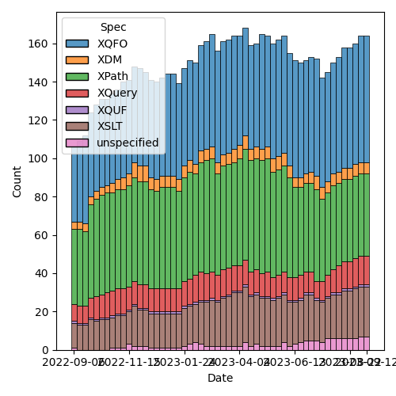
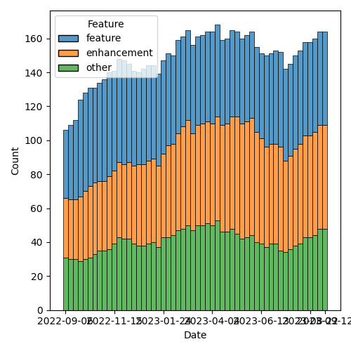

QT4 CG Meeting 045 Minutes 2023-09-12
Table of Contents
- Minutes
- Summary of new and continuing actions
[1/10] - 1. Administrivia
- 2. Technical Agenda
- 3. Any other business?
- 4. Adjourned
Agenda index / QT4CG.org / Dashboard / GH Issues / GH Pull Requests
Minutes
Approved at meeting 046 on 19 September 2023.
Summary of new and continuing actions [1/10]
[ ]QT4CG-002-10: BTW to coordinate some ideas about improving diversity in the group[ ]QT4CG-026-01: MK to write a summary paper that outlines the decisions we need to make on “value sequences”- This is related to PR #368: Issue 129 - Context item generalized to context value and subsequent discussion.
[ ]QT4CG-029-07: NW to open the next discussion of #397 with a demo from DN See PR #449[ ]QT4CG-039-01: NW to schedule discussion of issue #52, Allow record(*) based RecordTests[ ]QT4CG-042-02: NW to make the query into a simple map with repeated values.[ ]QT4CG-042-03: NW to consider revisions to query parses.[ ]QT4CG-045-01: MK to redraft PR #659 to reflect “search path” semantics.[ ]QT4CG-045-02: RD to address comments on HTML namespaces in another PR[ ]QT4CG-045-03: MK to write a PR for context values (issue #129)
1. Administrivia
1.1. Roll call [8/11]
Regrets: JL, SF.
[X]Reece Dunn (RD)[ ]Sasha Firsov (SF)[X]Christian Grün (CG)[X]Joel Kalvesmaki (JK) [:05-][X]Michael Kay (MK)[ ]John Lumley (JL)[ ]Dimitre Novatchev (DN)[X]Ed Porter (EP)[X]C. M. Sperberg-McQueen (MSM)[X]Norm Tovey-Walsh (NW). Scribe. Chair.[X]Wendell Piez
1.2. Accept the agenda
Proposal: Accept the agenda.
Accepted.
1.2.1. Status so far…

Figure 1: “Burn down” chart on open issues

Figure 2: Open issues by specification

Figure 3: Open issues by type
1.3. Approve minutes of the previous meeting
Proposal: Accept the minutes of the previous meeting.
Accepted.
1.4. Next meeting
The next meeting is scheduled for Tuesday, 19 September 2023.
Regrets: None heard.
Proposal: the meeting of 26 September will focus on XSLT issues.
Accepted.
1.5. Review of open action items [1/7]
[ ]QT4CG-002-10: BTW to coordinate some ideas about improving diversity in the group[ ]QT4CG-026-01: MK to write a summary paper that outlines the decisions we need to make on “value sequences”- This is related to PR #368: Issue 129 - Context item generalized to context value and subsequent discussion.
[ ]QT4CG-029-07: NW to open the next discussion of #397 with a demo from DN See PR #449[ ]QT4CG-039-01: NW to schedule discussion of issue #52, Allow record(*) based RecordTests[X]QT4CG-042-01: NW to use sequences instead of arrays inparse-urioutput.[ ]QT4CG-042-02: NW to make the query into a simple map with repeated values.[ ]QT4CG-042-03: NW to consider revisions to query parses.
1.6. Review of open pull requests and issues
1.6.1. Blocked
The following PRs are open but have merge conflicts or comments which suggest they aren’t ready for action.
- PR #635: 451: Schema compatibility
- PR #538: Attempt to allow xs:string to be 'promoted to' xs:anyURI
- PR #529: 528: revision of json(), and renaming to xdm-to-json()
- PR #470: 369 add fixed-prefixes attribute in XSLT
- PR #412: 409, QT4CG-027-01: xsl:next-match
- PR #368: 129: Context item generalized to context value
1.6.2. Merge without discussion
The following PRs were discussed last week and identified as “merge next week” if there have been no comments to the contrary.
- PR #631: 600: fn:decode-from-uri
- PR #623: 93: sort descending
- PR #599: 90: Simplified stylesheets with no xsl:version
Accepted.
The following editorial or otherwise minor PRs were open when this agenda was prepared. The chairs propose that these can be merged without discussion. If you think discussion is necessary, please say so.
- PR #682: 637: allow true() and false() as function annotation values
- PR #681: 665: Fix typos in fn:items-XX functions
- PR #679: 669 - fix typo "appearing appearing"
- PR #678: 671 switch sans operand
- PR #672: XFO minor edits, chap. 1
Accepted.
1.6.3. Close without action
It has been proposed that the following issues be closed without action. If you think discussion is necessary, please say so.
- Issue #160: Support named arguments on dynamic function calls
- MK: I couldn’t figure out how to make this work, so let’s just abandon it.
- … It’s not undesirable, but there’s a technical problem when you pass a function as an argument. When you want to call it from a function it’s been passed to, you don’t know it’s argument names.
- … Various mechanisms proposed to alleviate that problem are all hideously complicated.
- NW: Yeah, with regrets.
Accepted.
1.6.4. XSLT focused
The following PRs appear to be candidates for a future XSLT-focussed meeting.
- PR #674: 663: Describe how calls to xsl:original with keywords work
- PR #650: 649: fix an xsl:fallback problem
(And also #470 and #412 from the “blocked” list above.)
These issues identify the XSLT-focused changes that have been made to the specifications but which have not been established by the community group as the status quo.
1.6.5. Substantive PRs
The following substantive PRs were open when this agenda was prepared.
1.6.6. Requires confirmation
1.6.7. Proposed for V4.0
The following issues are labled “proposed for V4.0”.
- Issue #479: fn:deep-equal: Input order
- Issue #359: fn:void: Absorb result of evaluated argument
- Issue #340: fn:format-number: Specifying decimal format
- Issue #260: array:index-of
- Issue #238: Support Invisible XML
- Issue #130: New super/union type xs:binary?
- Issue #129: Context item → Context value?
- Issue #36: Allow support for user-defined annotations.
2. Technical Agenda
2.1. PRs
Try to resolve as many of these PRs as we can, leaving 20 minutes to discuss issues.
2.1.1. PR #659: 647: schema location hints
- MK: This is XQuery. XQuery allows an import schema to have more than
one location hint. I don’t know why, and it doesn’t say what the
multiple hints should mean, but we can try to describe the semantics.
- MK describes the proposed semantics for multiple hints, giving a preferred strategy that hopefully will lead to a convergence of behavior.
- NW: Is this what processors do now?
- MK: There aren’t that many schema aware processors.
- RD: I was wondering whether it makes sense to do this for module imports as well.
- MK: We did add something about that in 3.1. This is doing the same for schema imports.
- MSM: I’m not convinced that these are the right semantics. Having
some hint is better than having none. Thinking back to the early
days of XSD and XQuery, I think that some of the database people
were motivated by the idea of a search path. I suspect that’s what
this was for.
- … There are certainly cases where multiple schema documents are used to make a schema, but in that case I think it’s more common to have a single schema document that includes them.
- MK: I can see the sense of that.
- NW: A search path is what I would have guessed if you’d asked me to reply without investigating.
- RD: I’m looking through github using search and I can only see single schema imports.
Proposal: rework this PR so that the meaning of multiple hints is that the first one that’s dereferencable is used.
- MSM: Do we want the first one you can dereference or the first one from which you can successfully construct a schema?
Dereferencing is easier to describe. Fall over if you find something you can’t use.
- RD: Would it make sense to try to resolve them all and give a warning if multiple are found?
- MSM: No, because one of the useful scenarios for a search path is to select from different packages.
ACTION QT4CG-045-01: MK to redraft PR #659 to reflect “search path” semantics.
2.1.2. PR #673: HTML namespace changes
RD walks us through the PR.
- RD: Added a note about the fact that there are two algorithms
defined in the HTML specification.
- … And added a note about namespace nodes in the HTML DOM being ignored.
- … MK suggests this should be normative.
- … The implementation part should be a note but the actual description should be normative.
- … Also included notes about implementation defined behavior if shadow DOM nodes are passed in by APIs.
- … Removed all of the section about namespace nodes; simply say it’s an empty sequence per MK’s suggestion. We synthetically construct namespace nodes as needed.
- MK: You could have a high-level note that says the namepaces are the minimum needed to satisfy the constraints in the Data Model.
- RD: Removed the section about dealing with attribute namespace
nodes, dealt with elsewhere.
- … Expanded the discussion of node-name to deal with colons and other characters that would make the name not a valid NCName.
- NW: I think that should be normative then.
- RD: If I remember correctly, the HTML one is only an example.
- … Similar, corresponding changes in related sections.
- NW: It sounded like there were a couple of different kinds of changes you wanted to make. Some quite editorial, like moving things out of notes, others more substantial. Do you want to do the editorial ones and get this merged before moving on, or would you like to do it all at once?
- RD: It would probably make sense to merge this.
Proposal: merge this PR and address the corrections in another
Accepted.
ACTION QT4CG-045-02: RD to address comments on HTML namespaces in another PR
2.2. Issues
CG offered to update us on issue #129.
2.2.1. Issue #129: Context item → Context value?
CG reviews issue #129.
- CG: The idea is to extend the context item to context value.
- … Context item can be referenced with a “.”
- … The context item is singular, but variables can contain sequences
- … It would be straightforward to allow the context to hold sequences.
- CG walks through some examples in the issue.
- … Could add a “declare context value” declaration to describe the value.
- … It’s especially interesting when the context value is bound externally.
- … For example, you could bind the value to a collection and then XPath can be used to address items from the collection.
- RD: That’s also similar to what MarkLogic does. As I understand, the
way MarkLogic handles the example in the external binding section is
that it has a different definition of the double slash expression
that isn’t attached to any other step.
- … When it’s the root step it expands to something like
fn:collectioninstead of the normal root document.
- … When it’s the root step it expands to something like
- CG: There’s been some discussion about whether the semantics should be similar for single items or sequences.
- CG: New in QT4.0 are “focus functions”. It works fine for single
items and it could be extended to sequences.
- … Arrow expressions also work the way you would expect.
- … One idea was to use ~ instead of . when using sequences.
- … The other challenge is if the semantics should really be identical, or should binding sequences to paths have different semantics.
- NW: Thank you.
- MK: The PR I did a long time ago is probably now out of date. I
think the devil here is in the detail and we wouldn’t understand
them until we try to draft the technical changes.
- … In fact my conclusion from writing that PR is that it wasn’t as big a problem as I thought.
- … I adopted the approach of using “.” for a single item and “~” for the more general case.
- … That’s partly because I was concerned about type checking and optimization because we always know that “.” is a singleton and we can optimize for that.
- … XSLT uses the context item much more than Query, so it’s possibly quite a bit more complex. It probably needs to remain a singleton in many of those cases even if it would be nice if it could be a sequence.
- … I think it’s feasible. It’s disruptive but can probably done without backwards incompatibilities. It’ll just leave some odd rules in the spec reflecting its history. This really helps with arrays.
- MSM: I think I have two questions. Is there anything that currently sets the context item where people are going to think it would make more sense if it set a sequence. Or is the only way I’m going to get a sequence is by declaring a context value?
- CG: I think right now declaring a context value is the only way. I opened another issue where I discussed some different constructs where you could explicitly bind a value.
- MK: Another use case I introduced was a notation for predicates on arrays.
- MSM: I suppose, if we had had this from the beginning, the definition of “/” would have been different. The other question was about “~”. If I’m understanding the suggestion correctly, if as a user I want to simplify my life the rule I expect to follow would be always “~” where you’re used to using “.”. And now sometimes it can be a sequence. Then I guess the optimization opportunities go away. But will users who do that run into problems?
- MK: In many ways there’s less confusion if we use a single symbol.
And we lose the ability to use the ~ for things like in for each group.
- … I think the optimization question is, do we still know whether “.” is a singleton? I think the main XSLT case there is in where we’re in a template rule and I think we would make sure it was always a singleton.
- RD: I was wondering if there’s a case where just using “.” would cause an ambiguity. In the example where you’re passing “.” to a count function, but if you were passing it to something that only accepted a singleton item, would this functionality cause an ambiguity or errors?
- MK: I don’t think so.
- CG: We’ve been doing this for 10 years and we’ve never encountered any ambiguities.
Consensus is that we want to do this, yes?
Agreed.
ACTION QT4CG-045-03: MK to write a PR for context values (issue #129)
3. Any other business?
None heard.